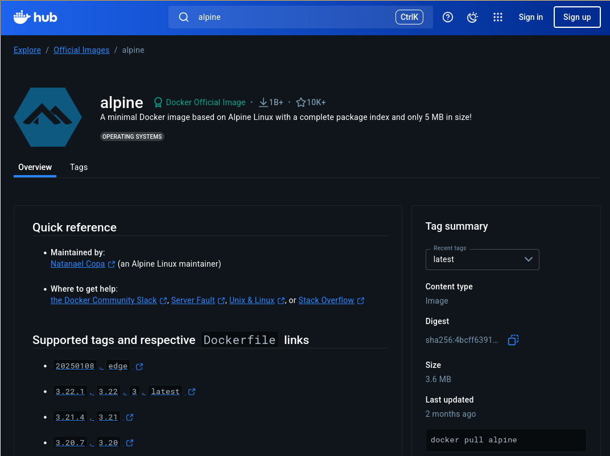

name: title layout: true class: cover, indos-cover, no-logo --- count: false .cover-band[ <img class="lockup" src="../assets/indos-logo-left-white.png" alt="INDoS" /> .eyebrow[WG3 Training School · Madrid 2026] # Containers ### Portable, versioned computing environments .who[Oscar Esteban <oscar.esteban@hevs.ch><br />HES-SO Valais-Wallis · 30.09.2026] <div class="mosaic"></div> ] .cover-side[ <a href="https://www.indos-costaction.eu/wg3-ts2026-esteban/day1-04-containers/"> <object type="image/svg+xml" data="images/qr-talk-url.svg"></object> <br /> www.indos-costaction.eu/wg3-ts2026-esteban/day1-04-containers/ </a> ] .cover-logos[ <img src="../assets/cost-logo-darkgrey.png" alt="COST" /> <img src="../assets/eu-funded-pos.png" alt="Funded by the European Union" /> ] ??? Thirty minutes of theory, then at 12:30 everyone brings up their environment on Neurodesk Play Europe. Everything in this talk is there to make that hour, and the Neurodesk talk at 14:00, make sense. --- name: newsection layout: true .perma-sidebar[ <p class="rotate"> <a rel="license" href="http://creativecommons.org/licenses/by/4.0/"><img alt="Creative Commons License" style="border-width:0; height: 20px; padding-top: 6px;" src="https://i.creativecommons.org/l/by/4.0/88x31.png" /></a> <span style="padding-left: 10px; font-weight: 600;">INDoS WG3 Training School · Containers (30.09.2026)</span> </p> ] --- # "It works on my machine" .boxed-content[ .pull-left[ > - Your code doesn't work. > - It works on my machine! > - Then pack that machine and ship it to the client. ] .pull-right.center[ ] ] .admonition[ .large[<i class="fa-solid fa-circle-right"></i> Why *only* on mine? Missing files, mismatched versions, different settings, a different platform.] ] ??? Reasons why "it works [only] on my machine": * One or more files are missing (meaning, the installation is not reproducible). * Software versions mismatch (e.g., Python 3.8 vs 3.10, or a dependency). * Different settings: * Environment variables different or not set (e.g., `PATH`, `PYTHONPATH`, etc.). * Configuration files * Permissions * Platform-specific settings (e.g., slightly different hardware) The punchline of the joke is literally what containers do: pack the machine and ship it. --- class: vcenter # Same pipeline, different environment .cards.cols-3[ .card[ .section-icon.corner[<i class="fa-solid fa-diagram-project"></i>] .kicker[more than the code] ### A pipeline is an environment The code, **plus** the interpreter, every library it imports, the operating system libraries underneath, environment variables and configuration files. ] .card[ .section-icon.corner[<i class="fa-solid fa-code-compare"></i>] .kicker[change one piece] ### ... and it is another computation A different version of one dependency, or a different platform, and the *same* pipeline is no longer guaranteed to return the same results. ] .card.accent[ .section-icon.corner[<i class="fa-solid fa-link"></i>] .kicker[back to 10:00] ### Standards need a fixed environment Standardized preprocessing only helps if we all run **the same version**, with **the same environment**. Containers ship both. ] ] .admonition[ .large[<i class="fa-solid fa-circle-right"></i> A result is only as reproducible as the environment that produced it.] ] ??? Link this back to the 10:00 talk on standardized preprocessing. A standardized pipeline such as fMRIPrep is only standard if the version and the environment are fixed too: the code alone does not determine the computation. Keep it qualitative here. The point is not that results will change, but that nothing guarantees they will not, unless the environment is fixed and recorded. --- <br /> <br /> <br /> <br /> .boxed-content[ .large[ *A container is a unit of software that packages code with its required dependencies in order to run in an isolated, controlled environment. This allows you to run an application in a way that is predictable, repeatable, and without the uncertainty of inconsistent code execution across diverse development and production environments. A container will always start up and run code the same way, regardless of what machine it exists on.* ] .large.center.gray-text[https://www.digitalocean.com/community/conceptual-articles/introduction-to-containers] ] ??? Read it out once, plainly. Next slide highlights the words that matter. --- count: false <br /> <br /> <br /> <br /> .boxed-content[ .large[ *A container is a unit of software that packages <mark>code with</mark> its required <mark>dependencies</mark> in order to run in an <mark>isolated</mark>, controlled environment. This allows you to run an application in a way that is <mark>predictable, repeatable</mark>, and without the uncertainty of inconsistent code execution across diverse development and production environments. A container will always start up and run code the same way, <mark>regardless of what machine</mark> it exists on.* ] .large.center.gray-text[https://www.digitalocean.com/community/conceptual-articles/introduction-to-containers] ] ??? Code *with* dependencies, isolated, predictable, repeatable, regardless of the machine: this is the list of problems from the "works on my machine" slide, turned into promises. --- class: vcenter # Virtual machines vs. containers .cards.cols-2[ .card[ .section-icon.corner[<i class="fa-solid fa-server"></i>] .kicker[requires its own kernel] ### Virtual machine A simulated computer (*guest machine*) running a full OS stack on top of a **hypervisor**, which provides the guest OS with virtual hardware. .foot[ * Booting the virtual OS takes a minute (or more), * images are large, * strong isolation, and * hardware capacity can be scaled down.] ] .card[ .section-icon.corner[<i class="fa-solid fa-cubes"></i>] .kicker[shares the host's kernel] ### Container Uses Linux kernel features to run **isolated processes** that share the host's **kernel**. .foot[ * Spinning up a container is a matter of seconds, * images are relatively small, and * they use the hardware directly, at full capacity.] ] ] .admonition[ .large[<i class="fa-solid fa-circle-right"></i> **Both** run apps on isolated environments] ] ??? * Containers share the host OS kernel, and isolate the application processes from the rest of the system. * Virtual machines simulate the physical hardware and install a full OS stack with its own kernel. BOTH run apps on isolated environments. **Hypervisor**: software layer that leverages hardware virtualization (directly, type 1, or through the OS, type 2) to create and run virtual machines. Examples: VirtualBox (type 2), VMware ESXi (type 1), Hyper-V (type 1). Main caveats of VMs vs containers, since each VM needs a full OS: * Heavy (GBs) * Slow to boot (minutes) * More resource hungry (RAM, CPU). E.g., 2 VMs with 2 GB RAM each on a host with 4 GB RAM will likely lead to swapping and very poor performance. Benefit of VMs vs containers: each VM is fully isolated, which is more secure. --- # Virtual machines vs. containers .boxed-content.center[ <img src="https://wac-cdn.atlassian.com/dam/jcr:92adde69-f728-4cfc-8bab-ba391c25ae58/SWTM-2060_Diagram_Containers_VirtualMachines_v03.png" alt="Virtual machines each carry a guest OS on a hypervisor; containers share the host OS through a container engine" style="width: 100%; padding-top: 20px;"/> .align-right.small[ Source: [Atlassian](https://www.atlassian.com/microservices/cloud-computing/containers-vs-vms) ] ] -- count: false .admonition[ .large[<i class="fa-solid fa-quote-left"></i> *It works on my (virtual) machine*] ] ??? Left: every app carries a guest OS. Right: the apps carry only their binaries and libraries, and share the host kernel through the container engine. The second step is the callback to the opening quote. The VM column is the old answer to exactly the same problem, and it is the expensive one. --- class: vcenter # Containers on macOS, Windows, ARM64 .cards.cols-3[ .card[ .section-icon.corner[<i class="fa-solid fa-laptop"></i>] .kicker[containers need Linux] ### No Linux kernel Neither macOS nor Windows has a Linux kernel: **they cannot run Linux containers natively**. .foot[Exception: Windows' WSL] ] .card[ .section-icon.corner[<i class="fa-solid fa-layer-group"></i>] .kicker[VMs to the rescue] ### Run Linux on a VM Docker Desktop runs a virtual machine with Linux on top. .foot[`docker info`: the OS it reports is not the one you booted.] ] .card.alert[ .section-icon.corner[<i class="fa-solid fa-triangle-exclamation"></i>] .kicker[tricky question] ### Apple silicon is ARM64 The VM runs Linux, but on the ARM64 architecture. If the software in the image is only compiled for AMD64, it must be **emulated**, instruction by instruction. .foot[Emulating instruction by instruction **is very slow**.] ] ] .admonition.warning[ <i class="fa-solid fa-triangle-exclamation"></i> The promise that containers *run the same everywhere* meets one limitation: the CPU architecture. ] ??? The first cast we will see was recorded on a Mac: `docker info` reports `Operating System: Docker Desktop`, `Kernel Version: ...-linuxkit` and `Architecture: aarch64`. That is the Linux VM, not macOS. Neuroimaging images are very often AMD64 only (for example, Neurodesk's fMRIPrep recipe lists `x86_64` as its only architecture). On an ARM64 laptop they run under emulation, slowly, and Docker prints a platform warning (you will see it in a later cast). One more reason to use a hosted environment today. --- # "Shipping weight" .boxed-content.center[ <object type="image/svg+xml" data="images/shipment-weight-0.svg" style="width: 90%; padding-top: 10pt;"></object> ] ??? A scale from heavy to light: how much do you have to ship along with your application? --- count: false # "Shipping weight" .boxed-content.center[ <object type="image/svg+xml" data="images/shipment-weight-1.svg" style="width: 90%; padding-top: 10pt;"></object> ] ??? "Bare metal" is a computer or server that runs on physical hardware and does not require hypervisors, virtual machines, or containerization in order to operate. Heaviest option: ship the laptop. --- count: false # "Shipping weight" .boxed-content.center[ <object type="image/svg+xml" data="images/shipment-weight-2.svg" style="width: 90%; padding-top: 10pt;"></object> ] ??? At the light end: package managers (Ubuntu's aptitude) and app containers (Ubuntu Snap). --- count: false # "Shipping weight" .boxed-content.center[ <object type="image/svg+xml" data="images/shipment-weight-3.svg" style="width: 90%; padding-top: 10pt;"></object> ] ??? In between: OS-level containers (LXC) and app-centric containers (Docker). Docker is the one we care about today. --- count: false # "Shipping weight" .boxed-content.center[ <object type="image/svg+xml" data="images/shipment-weight-4.svg" style="width: 90%; padding-top: 10pt;"></object> ] ??? And virtual machines on the heavy side: type 1 (VMware ESXi) runs directly on the hardware, type 2 (VirtualBox) runs on top of a host OS. --- class: vcenter # Images vs. containers .cards.cols-2[ .card[ .section-icon.corner[<i class="fa-solid fa-box-archive"></i>] .kicker[on disk, read-only] ### Image A stack of **layers** plus metadata. Built once, pushed, pulled, identical everywhere. .foot[ * `docker image ls`: lists pulled images. * `docker image history <image>`: see the layers of an image.] ] .card[ .section-icon.corner[<i class="fa-solid fa-play"></i>] .kicker[running, writable, disposable] ### Container One **process tree** started from an image, with a thin writable layer on top. .foot[ * `docker ps`: see what is currently running. * `docker ps -a`: see what has been run.] ] ] .admonition[ .larger[<i class="fa-solid fa-circle-right"></i> Best practice: clear the container after execution adding `--rm` to the `docker run` command.] ] ??? Image = immutable filesystem changes + metadata. Container = runtime instance of an image. Same distinction as a program on disk and a running process. --- # Images are made of layers .boxed-content[ .no-bullet[ * .large[<i class="fa-solid fa-box"></i> Images are software bundles] * .larger[when executed, they become containers] * .large[<i class="fa-solid fa-layer-group"></i> Images are made of layers] * .larger[each layer encapsulates a set of filesystem changes] * .larger[layers are akin to software deployment steps] * .large[<i class="fa-solid fa-square-pen"></i> Layers are **immutable**] * .larger[except for a R/W layer that the container runtime adds on top] * .large[<i class="fa-solid fa-file-prescription"></i> Layers are described in the `Dockerfile`] * .larger[the `Dockerfile` is the recipe to create an image] ] ] ??? Keep the R/W layer in mind: in a few slides we will see what happens to anything written into it. --- # First contact with Docker .boxed-content[ <div class="asciicast" id="docker-hello-world" data-speed="3" data-idle="1.5" data-rows="26" data-cols="112"></div> ] ??? Recorded on a Mac with Docker Desktop. * `docker info`: check the installation. Point at `Operating System: Docker Desktop`, `Kernel Version: ...-linuxkit`, `Architecture: aarch64` (the Linux VM from before). * `docker run hello-world`: the image is not found locally, so Docker pulls it from Docker Hub, creates a container, runs it, and streams the output back. Read the four steps it prints: they describe client, daemon, image, container. * `docker run -it ubuntu bash`: a whole Ubuntu userland in a couple of seconds. --- # A first `Dockerfile` (whalesay) .boxed-content[ .large[ ```dockerfile FROM alpine RUN apk add --no-cache perl COPY cowsay /usr/local/bin/whalesay COPY docker.cow /usr/local/share/cows/default.cow ENTRYPOINT ["/usr/local/bin/whalesay"] ``` ] .large[ * [`FROM`](https://docs.docker.com/reference/dockerfile/#from) indicates a base image (`alpine`) * [`RUN`](https://docs.docker.com/reference/dockerfile/#run) executes commands in the image being built (`apk add`) * [`COPY`](https://docs.docker.com/reference/dockerfile/#copy) copies files from the build context into the image * [`ENTRYPOINT`](https://docs.docker.com/reference/dockerfile/#entrypoint) sets what a container runs when started ] ] ??? How this recipe translates into natural language: > Start with an Alpine Linux distribution. > Install perl without caching installation files (to save space). > Copy the `cowsay` perl script into the image, at `/usr/local/bin/whalesay`. > Copy the Docker whale over the default cow. > Tell the Docker runtime to execute `/usr/local/bin/whalesay` when it is invoked. Each instruction becomes one layer. --- # First line: `FROM alpine` .boxed-content.larger.no-bullet[ * .large[<i class="fa-solid fa-circle-right"></i> Where does that `alpine` in `FROM alpine` come from?] <br /> .indent[From the *Docker Hub*: https://hub.docker.com/_/alpine] .center[<p></p>] ] ??? Alpine Linux is a very small and simple distribution, which makes it a popular base image. Images are almost always bootstrapped from another image. --- # Building the image .boxed-content[ <div class="asciicast" id="docker-build" data-speed="4" data-idle="1.5" data-rows="33" data-cols="146"></div> ] ??? What happens in the recording: 1. `docker images`: clean slate, nothing cached. 2. `docker build -t my_whale:base .`: one step per `Dockerfile` instruction; `alpine` is pulled from Docker Hub first. 3. `docker images` again: two images now, `alpine` and `my_whale`. 4. `docker run --rm my_whale:base 'Hello again!'`: the whale talks. 5. Build again: every step reports *Using cache*, very fast. 6. Edit `docker.cow` and build a new tag (`my_whale:c3po`): only the layers after the change are rebuilt. --- # Layers in `my_whale` .boxed-content[ ```Bash $ docker image history my_whale IMAGE CREATED CREATED BY SIZE afdf7ad851ab 5 days ago /bin/sh -c #(nop) ENTRYPOINT "/usr/local/bi… 0B <missing> 5 days ago /bin/sh -c #(nop) COPY file:6a0962740d5a04ca… 369B <missing> 5 days ago /bin/sh -c #(nop) COPY file:9b4a3b07f3dd78e8… 4.13kB <missing> 5 days ago /bin/sh -c apk add --no-cache perl 38.3MB <missing> 2 months ago CMD ["/bin/sh"] 0B <missing> 2 months ago ADD alpine-minirootfs-3.22.1-x86_64.tar.gz / 8.31MB ``` .large[Read it bottom-up: `alpine` first, then one layer per instruction.] ] ??? The two bottom layers come from `alpine` (8.31 MB). Installing perl adds the heaviest layer (38.3 MB). The two `COPY` layers are a few kB. This is why the rebuild was fast: layers that did not change are reused. --- # The R/W layer: changes vanish .boxed-content[ <div class="asciicast" id="docker-rw-layer" data-speed="4" data-idle="1.5" data-rows="26" data-cols="112"></div> ] ??? What happens in the recording: 1. `docker pull nipreps/miniconda`: no tag given, so Docker uses `latest`. 2. `docker run --rm -it --entrypoint=/bin/bash nipreps/miniconda`: note the platform warning, the image is `linux/amd64` and the laptop is ARM64. 3. `datalad --version`: not found. `pip install datalad`, and now it works. 4. `exit`, and run the same image again: `datalad: command not found`. The installation went to the container's R/W layer, which disappeared with the container. To keep a change, write it into the `Dockerfile` and rebuild. --- # Registries and version pinning .cards.cols-2[ .card[ .section-icon.corner[<i class="fa-brands fa-docker"></i>] .kicker[where images live] ### Registries Images are distributed through **registries**. Docker's official one is *Docker Hub* ([hub.docker.com](https://hub.docker.com/)): it is where `hello-world` and `alpine` came from. .foot[Images are addressed as `user/name:tag`, e.g. `nipreps/fmriprep:25.2.5`] ] .card.alert[ .section-icon.corner[<i class="fa-solid fa-thumbtack"></i>] .kicker[never rely on `latest`] ### Pin the version Without a tag, Docker uses `latest`: a label that moves every time a new version is pushed. ```Bash docker pull nipreps/fmriprep:25.2.5 ``` .foot[Report the exact tag in your methods.] ] ] .admonition[ .large[<i class="fa-solid fa-circle-right"></i> The tag is part of your methods: `fmriprep:latest` today and in a year are not the same pipeline.] ] ??? Remember `Using default tag: latest` in the pull recording. 25.2.5 is the latest fMRIPrep release on GitHub at the time of writing, and it is also the fMRIPrep version currently packaged in Neurodesk. (A 25.2.6 tag reached Docker Hub on 29.09.2026, together with an update of `latest`: a live example of `latest` moving under your feet.) For the strictest pinning, an image can also be addressed by its digest (`nipreps/fmriprep@sha256:...`), which cannot be moved at all. --- # Shared systems: Apptainer .cards.cols-2[ .card[ .section-icon.corner[<i class="fa-solid fa-user-lock"></i>] .kicker[no root, no Docker] ### Docker needs privileges The Docker daemon runs as root. On shared servers you usually do not have root, so Docker is usually not available there. ] .card.accent[ .section-icon.corner[<i class="fa-solid fa-user-check"></i>] .kicker[same images, your user] ### Apptainer (formerly Singularity) Runs containers as **your own, unprivileged user**, and converts Docker images into a single `.sif` file. ] ] .boxed-content.larger[ ```Bash apptainer pull fmriprep-25.2.5.sif docker://nipreps/fmriprep:25.2.5 apptainer run --cleanenv fmriprep-25.2.5.sif --version ``` ] .admonition[ <i class="fa-solid fa-circle-right"></i> Concept only: there is no cluster at this school. Neurodesk, next, runs Apptainer containers for you. ] ??? This is the concept only: there is no cluster at this school, and we will not run this today. The point is that the images you build or pull with Docker are the same images Apptainer runs on a shared server: `docker://` tells Apptainer to fetch from Docker Hub and convert. `--cleanenv` keeps your host environment variables out of the container. Neurodesk, next, uses Apptainer containers under the hood. --- class: vcenter # Neurodesk: containers, ready to use .cards.cols-3[ .card[ .section-icon.corner[<i class="fa-solid fa-boxes-stacked"></i>] .kicker[pre-built] ### Neurocontainers More than 100 imaging tools, each packaged as a container, in explicit versions. ] .card[ .section-icon.corner[<i class="fa-solid fa-network-wired"></i>] .kicker[via CVMFS] ### Nothing to install The containers are served from a read-only network filesystem. .foot[`/cvmfs/neurodesk.ardc.edu.au`] ] .card[ .section-icon.corner[<i class="fa-solid fa-terminal"></i>] .kicker[exposed as modules] ### Load, then run ```Bash ml av ml fmriprep/25.2.5 fmriprep --version ``` ] ] .cta[ <i class="fa-solid fa-globe"></i> In your browser: **Neurodesk Play Europe**, [play-europe.neurodesk.org](https://play-europe.neurodesk.org) · [www.neurodesk.org](https://www.neurodesk.org) <br /> <i class="fa-solid fa-circle-right"></i> **14:00**: *Neurodesk*, by Steffen Bollmann (remote) ] .small.gray-text[Renton et al. (2024) *Nature Methods*, ] ??? Neurodesk takes everything in this talk and removes the installation step: * Tools are containers (Neurocontainers), each in explicit versions. * They are distributed through CVMFS, mounted at `/cvmfs/neurodesk.ardc.edu.au`, so nothing has to be pulled by hand. * They are exposed as Lmod modules: `ml av` lists them, `ml <tool>/<version>` loads one, and then the tool behaves like installed software. * Neurodesk Play gives the whole environment in the browser. The Europe server signs in with a GitHub account. The first call to a tool can take a moment, while its files are fetched. Steffen Bollmann will present Neurodesk properly at 14:00. --- # Next, 12:30: environment bring-up .cards.steps.tight[ .card[ .enum[1] **Log in** to [play-europe.neurodesk.org](https://play-europe.neurodesk.org) with your GitHub account ] .card[ .enum[2] **Open a terminal**: in JupyterLab, *File › New › Terminal* ] .card[ .enum[3] **Load one tool and print its version**: `ml fmriprep/25.2.5`, then `fmriprep --version` ] .card[ .enum[4] **Report anything that does not work**: we fix it over lunch ] ] .admonition.question[ <i class="fa-solid fa-circle-question"></i> Account still waiting for approval, or the server does not start? Tell us now, not after lunch. ] ??? The goal of the 12:30 session is not to learn anything new: it is to make sure every single person has a working environment before the afternoon. New accounts on Neurodesk Play may need to be approved first, so anyone who has not logged in yet should try right away. If `fmriprep` is slow to answer the first time, that is CVMFS fetching files: wait before reporting it. --- class: vcenter # Thank you .cta[ All materials: **www.indos-costaction.eu/wg3-ts2026-esteban**, CC BY 4.0. ] .cost-ack[ <img src="../assets/cost-logo-darkgrey.png" alt="COST" /> <img src="../assets/eu-funded-pos.png" alt="Funded by the European Union" /> This publication is based upon work from COST Action CA24161 (INDoS), supported by COST (European Cooperation in Science and Technology). ]